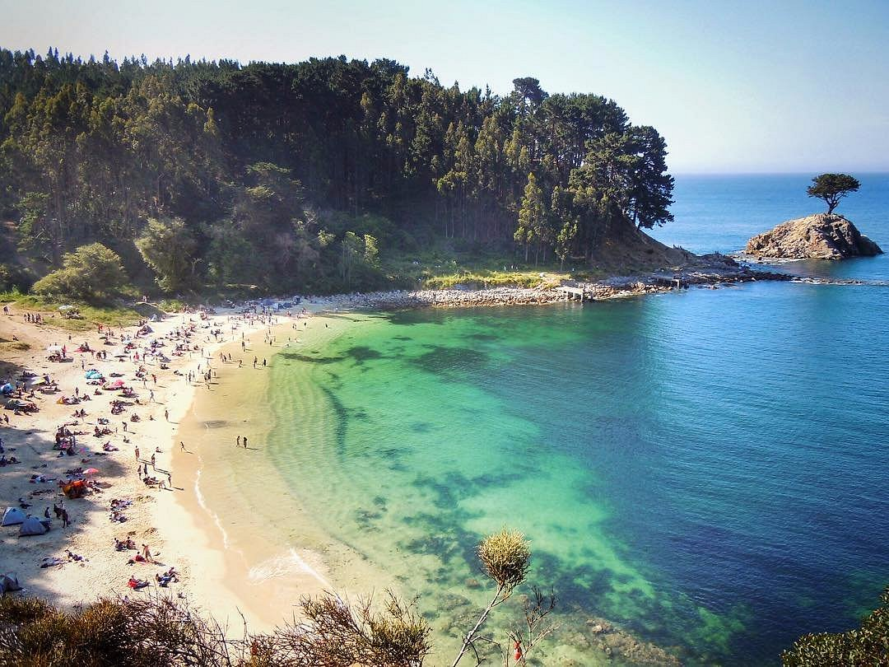
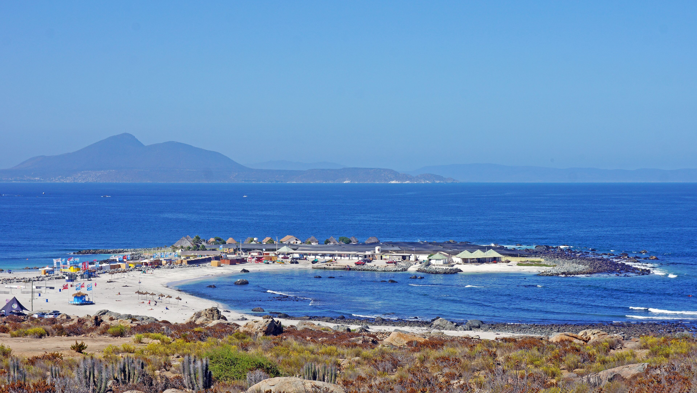
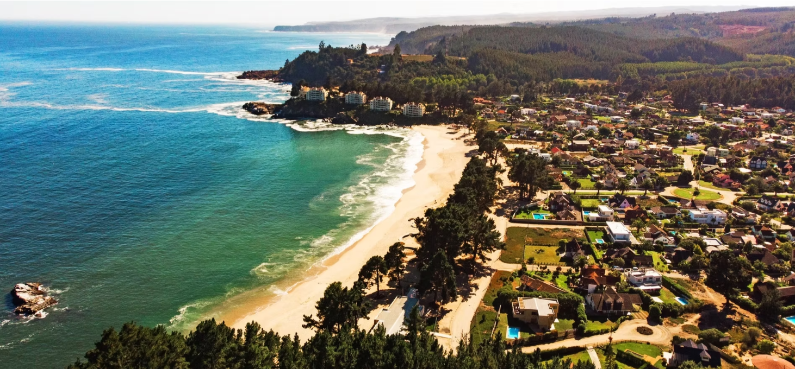

Ramuntcho
Para conectar con la naturaleza.
Ubicación: Región del Biobío
Los destinos mas recomendados de Chile para turistas

Para conectar con la naturaleza.
Ubicación: Región del Biobío
Apta para el baño
Detalles del entorno: Hermosa playa escondida rodeada de acantilados imponentes y exuberante vegetación nativa. Sus aguas suelen ser muy calmas.
Acceso: Requiere caminata por un sendero ecológico desde el Santuario de la Naturaleza.
Actividades: Caminatas por senderos ecológicos, fotografía de paisajes, natación cautelosa y avistamiento de aves marinas.

Para disfrutar de aguas turquesas y actividades náuticas.
Ubicación: Región de Atacama
Apta para el baño
Detalles del entorno: Considerada una de las mejores playas de Chile por sus arenas blancas y sus aguas cristalinas de tonalidades turquesas.
Acceso: Ubicada a solo 6 km de Caldera con accesos completamente pavimentados.
Actividades: Ideal para practicar kayak, sup board, buceo recreativo, natación y paseos en lancha.

Para combinar paisajes costeros y aventura.
Ubicación: Región de Coquimbo
Parcialmente apta para el baño (ya que cuenta con un sector habilitado)
Detalles del entorno: Destaca por su península rocosa que divide la costa en dos hermosas playas de arena clara.
Acceso: Se encuentra a 12 km al sur de Coquimbo por la Ruta 5 Norte.
Actividades: Uno de los puntos principales de la región para la práctica de surf, bodyboard y pesca deportiva.

Para descansar y disfrutar de un entorno costero.
Ubicación: Región del Biobío
NO apta para el baño (mar abierto y oleaje fuerte)
Detalles del entorno: Extensa playa abierta que colinda con un estero y un hermoso entorno residencial de veraneo.
Acceso: Ubicada a 15 minutos del centro de Tomé por ruta pavimentada.
Actividades: Excelente para caminatas familiares por la orilla, descanso, fotografía y deportes en la zona del río/laguna.
Acompáñanos a recorrer los mejores paisajes y costas de nuestro país.